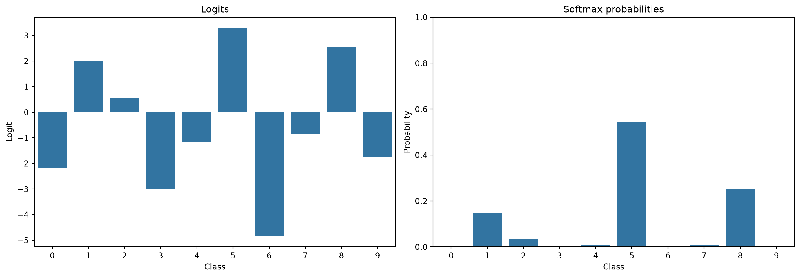
CAS Deep Learning - Computer Vision (Part1)
Institute for Data Science I4DS, FHNW
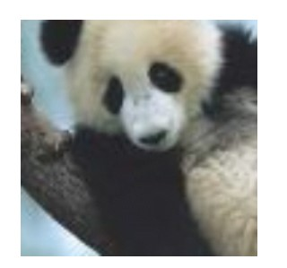
Source: Goodfellow et al. (2015)
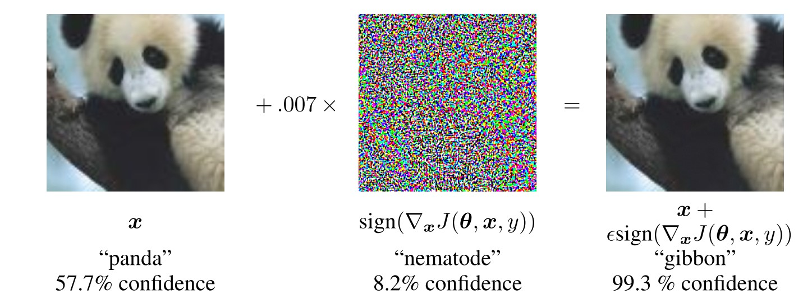
Source: Goodfellow et al. (2015)
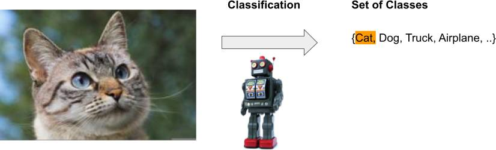
Figure 1: Assign an image to one of \(K\) predefined categories.
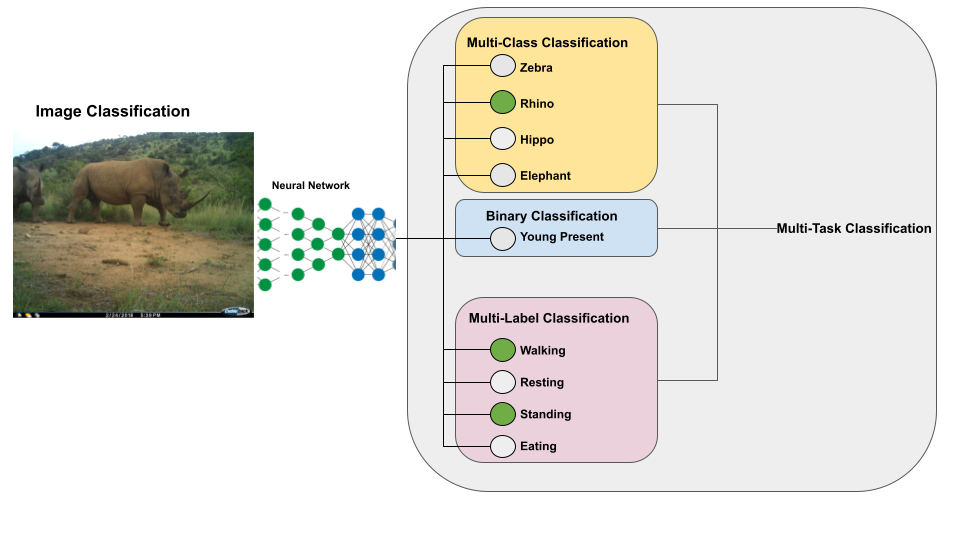
Figure 2: Different variants of classification.
A classifier maps an input image to one score per class:
\[ \mathbf{z} = f_\theta(\mathbf{x}) \]
Logits are not probabilities, they can be negative, positive, small, or large.
A classifier outputs one logit per class:
\[ \mathbf{z} = f_\theta(\mathbf{x}), \qquad \mathbf{z} \in \mathbb{R}^K \]
Softmax converts logits into class probabilities:
\[ P(Y = k \mid X = \mathbf{x}^{(i)}) = \sigma(\mathbf{z})_k = \frac{e^{z_k}}{\sum_{j=1}^K e^{z_j}} \]

Logits can be any real number — softmax always produces a valid probability distribution.
A good classifier assigns high probability to the correct class.
For an image whose true class is deer:
Cross-entropy only cares about the probability assigned to the true class.
For one sample with one-hot label \(\mathbf{y}\) and predicted probabilities \(\hat{\mathbf{y}}\):
\[ CE(\mathbf{y}, \hat{\mathbf{y}}) = -\sum_{j=1}^K y_j \log \hat{y}_j \]
Because \(\mathbf{y}\) is one-hot, only the true class \(c\) contributes:
\[ CE = -\log \hat{y}_c \]
So training minimizes the negative log-probability of the correct class.
A model predicts:
Which prediction gives the higher cross-entropy?
The first prediction.
For the deer image:
\[ CE = -\log(0.4) \approx 0.92 \]
For the fox image, \(P(\text{deer})\) is irrelevant. Cross-entropy depends only on the probability assigned to the true class, here \(P(\text{fox})\).
A classification model usually has two parts:
Conceptually:
\[ \text{image} \rightarrow \text{features} \rightarrow \text{logits} \rightarrow \text{probabilities} \]
Training uses logits + labels to compute cross-entropy loss.
The common pattern: better feature extractors → better classification backbones.
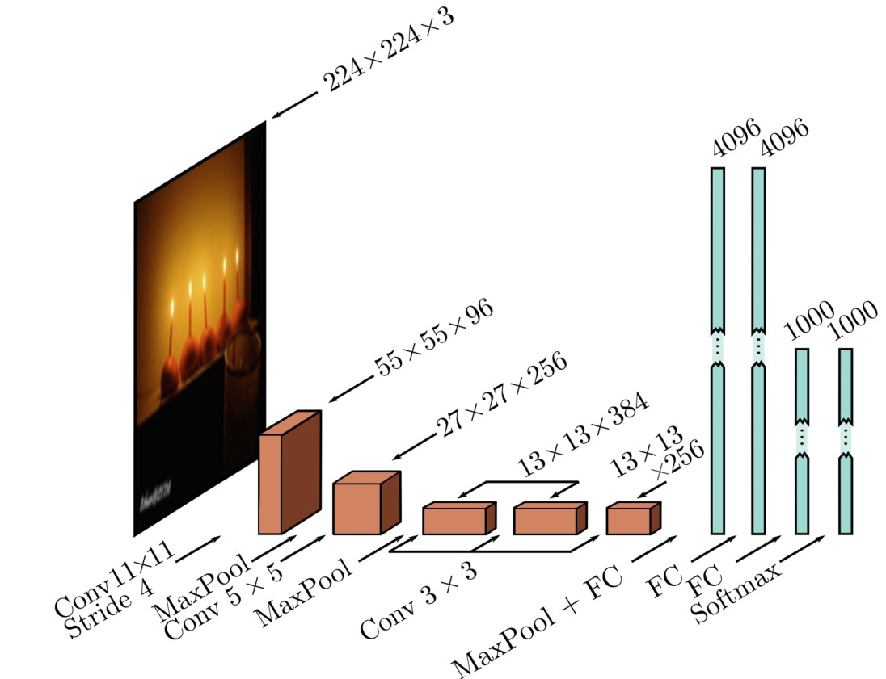
Prince (2023)
The network had to be split across GPUs due to memory limits.
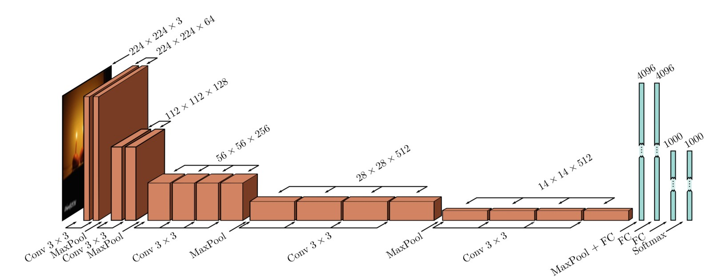
Prince (2023)
Design rule: when spatial size halves, double the number of filters (preserves time complexity).
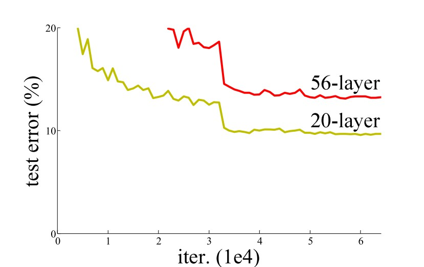
Source: He et al. (2016)
Not overfitting — an optimization problem.
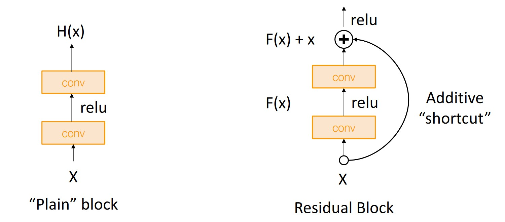
Source: Johnson (2019)
\[ \mathbf{x}_{l+1} = \mathbf{x}_l + F(\mathbf{x}_l) \]
Learn the change, not the full transformation.
If a layer has nothing to add: \(F(\mathbf{x}_l) \approx 0\) → identity.
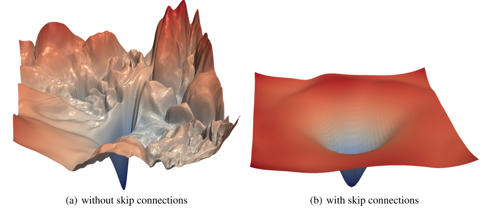
Source: Li et al. (2018)
Skip connections smooth the loss surface → optimization works.
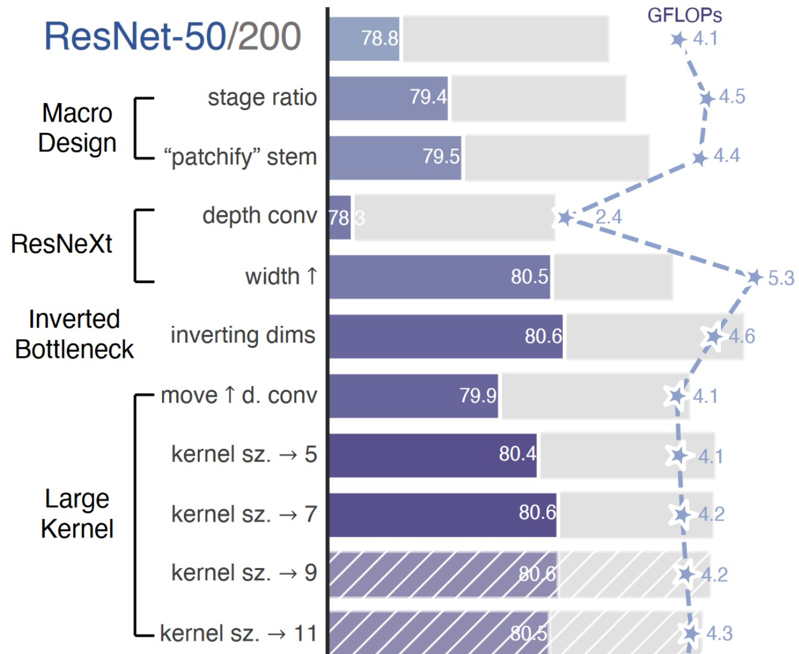
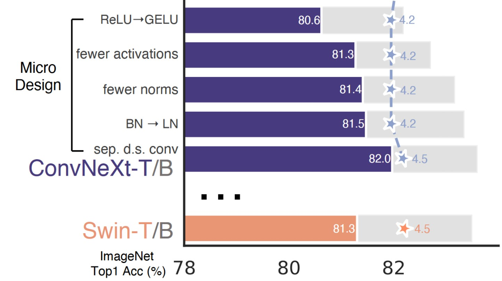
Figures from Liu et al. (2022).
Don’t be a hero.
Start with a proven pretrained backbone:
Choose based on accuracy, speed, memory, available data, and deployment constraints.